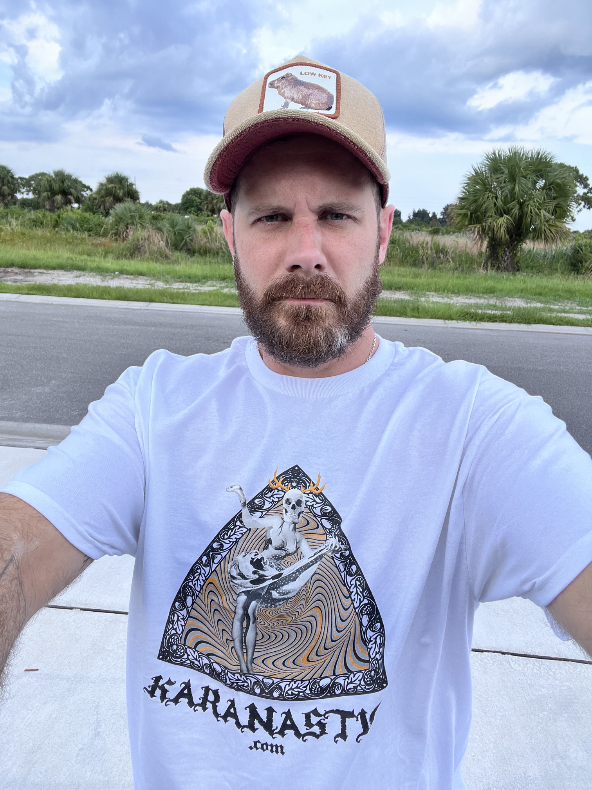
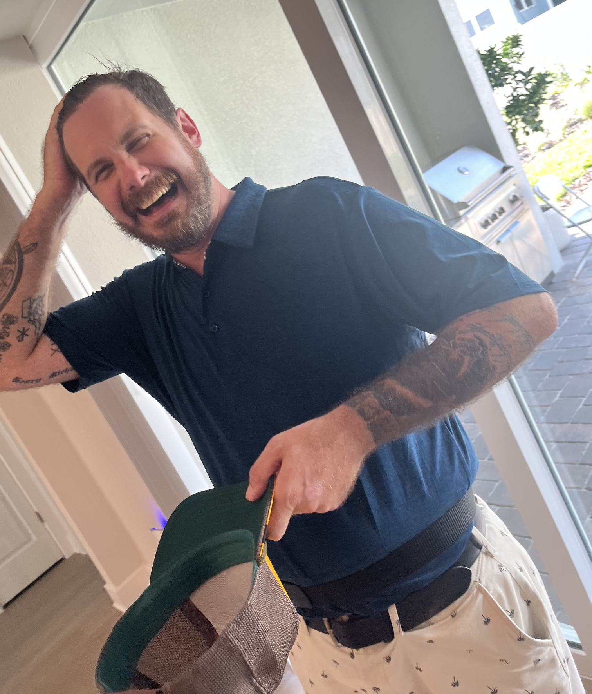
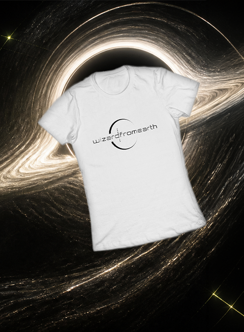

28.0345° N / 80.5887° W PALM BAY NODE
Music from outside the agreed coordinates.
Experimental sound, guitar, ambient drift, indie fracture, and rap transmitted from Brevard County.
Enter the archive
SECTOR 01 / AUDIO
Signal archive
__SOLO_COUNT__ solo transmissions plus __FEATURE_COUNT__ cross-signal recordings. Stream the signal or take the files with you. No platforms required.
CROSS-SIGNAL / COLLABORATION
Featuring Karanastic
Seven recordings from the shared frequency between wizardfromearth and Karanastic.
Enter karanastic.comNo signal found at those coordinates.

SECTOR 02 / ORIGIN
Not constrained from this world.
wizardfromearth is a genre-resistant musician, songwriter, and multi-instrumentalist whose work exists somewhere between the familiar and the unexplored.
His creative journey began in Providence and continues today in Brevard County near Palm Bay, Florida. Across well over a decade of making music, he has built a practice around experimentation, independence, and constant movement—performing vocals, guitar, bass, and keyboard while shifting naturally between singing and rapping.
He does not trace his sound back to a single artist or musical lineage. Indie songwriting, ambient space, experimental texture, live instrumentation, and hip-hop language can all occupy the same world. His imagination is shaped by the irreverent futurism of Futurama, the deep mythology of The Lord of the Rings, and a fluent command of both English and German.

SECTOR 03 / PHYSICAL OBJECTS
Objects now available
Wear the signal.
The Wizard From Earth Logo Collection
The Wizard From Earth logo is available on shirts, stickers, and more. Choose a format or explore the complete collection on Redbubble.
SECTOR 04 / UPLINK
Send a transmission.
Collaboration, performance, licensing, strange ideas, or messages from elsewhere. The channel is open.
Estimated response: terrestrial time